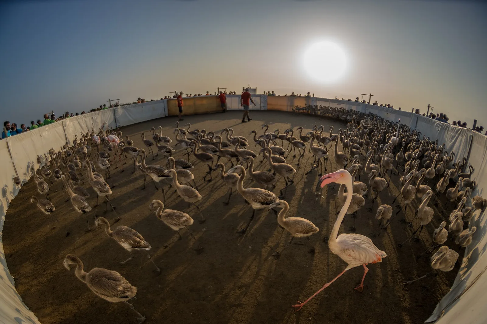

OV6 · Otros vuelos
OV6 · Andere Flüge
OV6 · Other flights
Delta del Ebro
Información
El delta del Ebro cubre 320 kilómetros cuadrados y es el hábitat acuático más extenso de Cataluña. El Parque Natural protege 7.805,8 hectáreas de ese conjunto.
Es lagunas, bahías, playas, arrozales y salinas, con una diversidad de ambientes muy alta en poco espacio, y uno de los puntos más importantes del Mediterráneo occidental para las aves acuáticas.
Information
El delta del Ebro cubre 320 kilómetros cuadrados y es el hábitat acuático más extenso de Cataluña. El Parque Natural protege 7.805,8 hectáreas de ese conjunto.
Es lagunas, bahías, playas, arrozales y salinas, con una diversidad de ambientes muy alta en poco espacio, y uno de los puntos más importantes del Mediterráneo occidental para las aves acuáticas.
Information
El delta del Ebro cubre 320 kilómetros cuadrados y es el hábitat acuático más extenso de Cataluña. El Parque Natural protege 7.805,8 hectáreas de ese conjunto.
Es lagunas, bahías, playas, arrozales y salinas, con una diversidad de ambientes muy alta en poco espacio, y uno de los puntos más importantes del Mediterráneo occidental para las aves acuáticas.
El delta del Ebro se hunde y retrocede a la vez. Por un lado el mar se come la costa; por el otro el terreno baja por su propio peso y por falta de sedimento, y a eso se suma el ascenso del nivel del mar por el calentamiento.
La causa del segundo fenómeno está río arriba: en la cuenca del Ebro se construyeron unos doscientos embalses que retienen alrededor del 99,9 % de la carga sólida que el río llevaba a fines del siglo XIX. El barro que formó el delta ya no llega.
En enero de 2020 el temporal Gloria dejó daños por más de 75 millones de euros sólo en reparaciones de puertos, playas y paseos marítimos. Se están ensayando inyecciones de sedimento en el tramo final del río.
El delta del Ebro se hunde y retrocede a la vez. Por un lado el mar se come la costa; por el otro el terreno baja por su propio peso y por falta de sedimento, y a eso se suma el ascenso del nivel del mar por el calentamiento.
La causa del segundo fenómeno está río arriba: en la cuenca del Ebro se construyeron unos doscientos embalses que retienen alrededor del 99,9 % de la carga sólida que el río llevaba a fines del siglo XIX. El barro que formó el delta ya no llega.
En enero de 2020 el temporal Gloria dejó daños por más de 75 millones de euros sólo en reparaciones de puertos, playas y paseos marítimos. Se están ensayando inyecciones de sedimento en el tramo final del río.
El delta del Ebro se hunde y retrocede a la vez. Por un lado el mar se come la costa; por el otro el terreno baja por su propio peso y por falta de sedimento, y a eso se suma el ascenso del nivel del mar por el calentamiento.
La causa del segundo fenómeno está río arriba: en la cuenca del Ebro se construyeron unos doscientos embalses que retienen alrededor del 99,9 % de la carga sólida que el río llevaba a fines del siglo XIX. El barro que formó el delta ya no llega.
En enero de 2020 el temporal Gloria dejó daños por más de 75 millones de euros sólo en reparaciones de puertos, playas y paseos marítimos. Se están ensayando inyecciones de sedimento en el tramo final del río.
Fuentes
Quellen
Sources
- Generalitat de Catalunya, Consell Assessor per al Desenvolupament Sostenible, Un litoral al límit. Recomanacions per a una gestió integrada (PDF) — https://cads.gencat.cat/web/.content/Documents/Informes/2021/informe-Un-Litoral-al-Limit.pdf
- Generalitat de Catalunya, Oficina Catalana del Canvi Climàtic, Sobre el temporal Gloria (19-23.01.20) i els seus efectes (PDF) — https://canviclimatic.gencat.cat/web/.content/03_AMBITS/adaptacio/ESCACC_2021_2030/GLORIA_BAIXA.pdf
Galería
Galerie
Gallery


Fuentes
Quellen
Sources
- Generalitat de Catalunya, Parc Natural del Delta de l'Ebre — https://parcsnaturals.gencat.cat/ca/xarxa-de-parcs/delta-ebre/el-parc/ consultado 2026-10-06abgerufen 2026-10-06accessed 2026-10-06